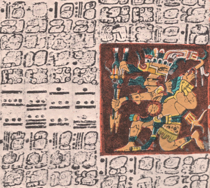
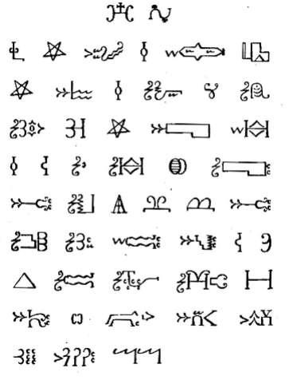

Bilingual English/Cherokee sign from Cherokee, North Carolina

Portion of the Maya script from the Dresden Codex

The Lord's Prayer in Mi'kmaq hieroglyphsThe label of "hieroglyphs" (in reference to the Egyptian hieroglyphs) is a misnomer; it's more accurately described as an ideography, since its symbols don't convey specific semantic meaning.